01
查证
能核验
产品有注册身份，机构、人员与场所都有资质。
MEDICAL AESTHETICS · PUBLIC EDUCATION
一套面向普通消费者的注射安全说明书。我们不替你选项目，只帮助你看清产品、人员、场所、风险与责任。
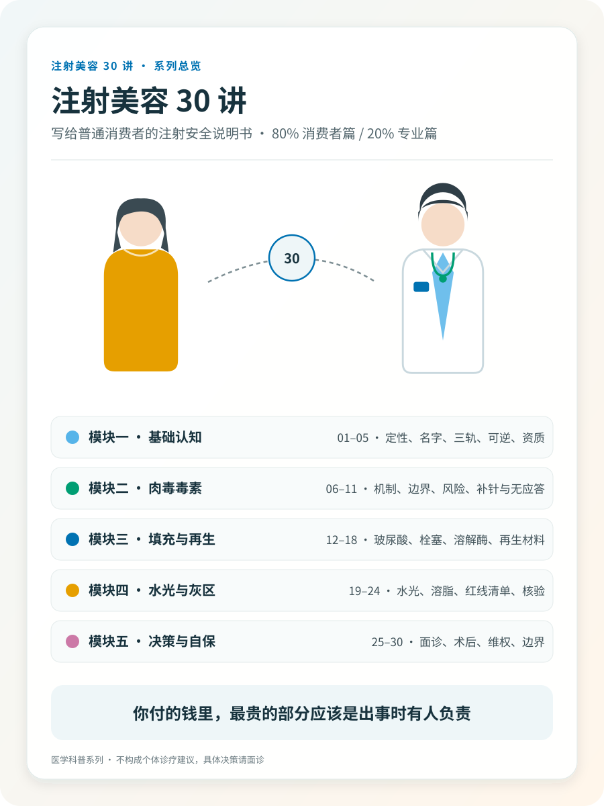
THE PREMISE
一次可以被信任的注射，需要合法药械、有资质的操作者、有资质的场所、真实存在的应急能力，以及事后可追溯的责任主体。
“消费感”越强的场景，越要主动找回医疗行为应有的判断与责任。
THE FOUR GATES
它们是“与”的关系，不是“或”。任何一道门不通过，其他三道再完美，这一针都不该打。
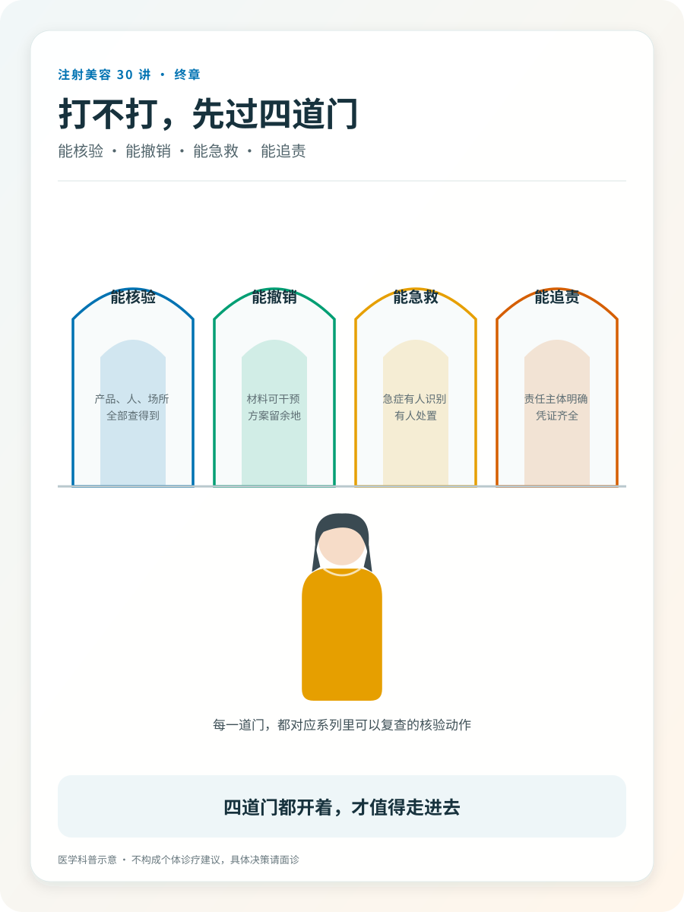
产品有注册身份，机构、人员与场所都有资质。
材料可逆性与退出机制被如实告知，边界讲清。
风险被完整告知，识别、处置与转诊体系真实存在。
病历与记录完整，责任主体明确、找得到。
FIVE MODULES
THE LIBRARY
消费者篇 24 篇，专业篇 6 篇。
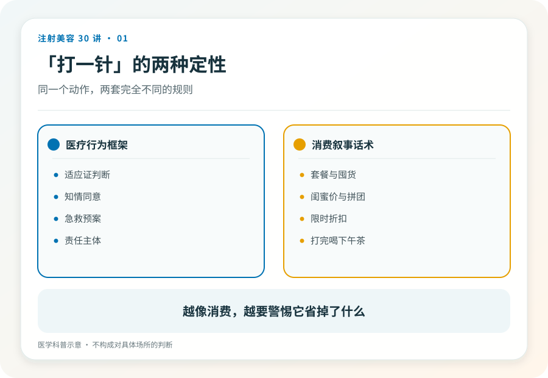
01本文帮助你重新给“打一针”定性。它不评价任何具体项目，也不替你决定打还是不打。
 02
02
本文不评价任何品牌，只教你把营销名翻译成可核验的注册信息。
 03
03
本文教你在“正品还是假货”之前，先问一个更基础的问题。
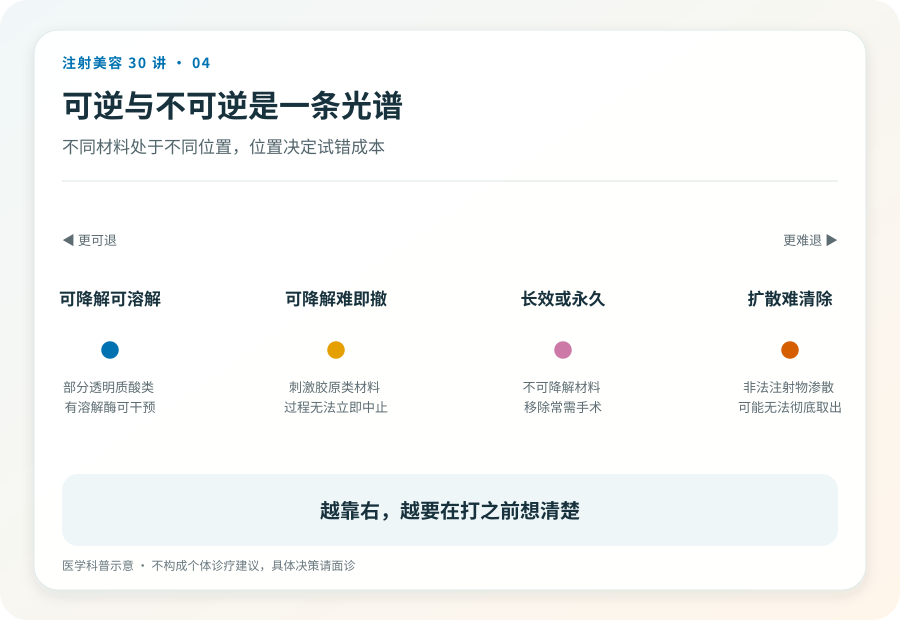
04本文提供一个风险分层框架。“可逆优先”是本系列明确倡导的立场，不是医学指南结论。
 05
05
本文教你核验资质，不教你分辨“手法好坏”。前者查得出来，后者查不出来。
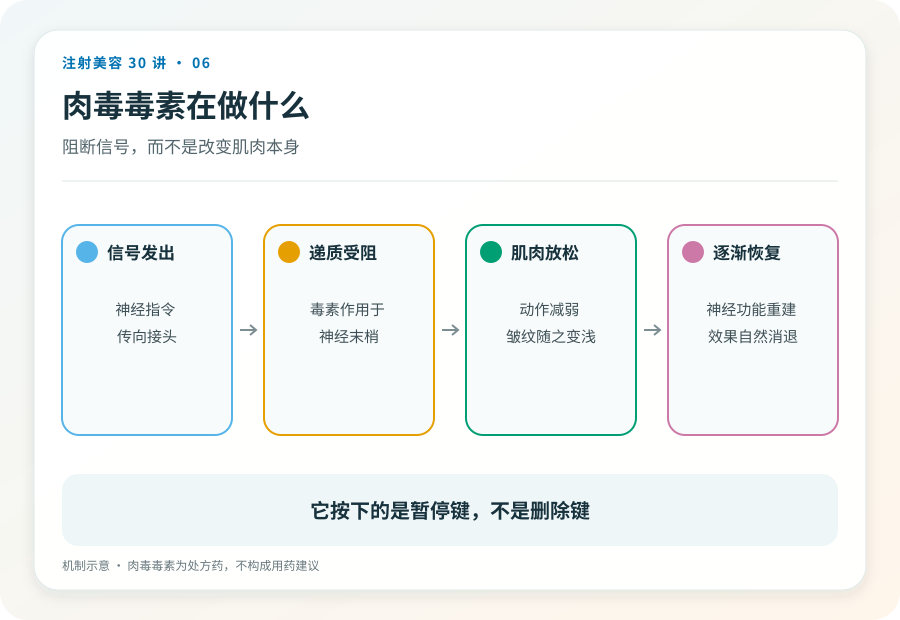
06本文解释肉毒毒素的基本原理与药品身份，不讨论剂量、点位或品牌。
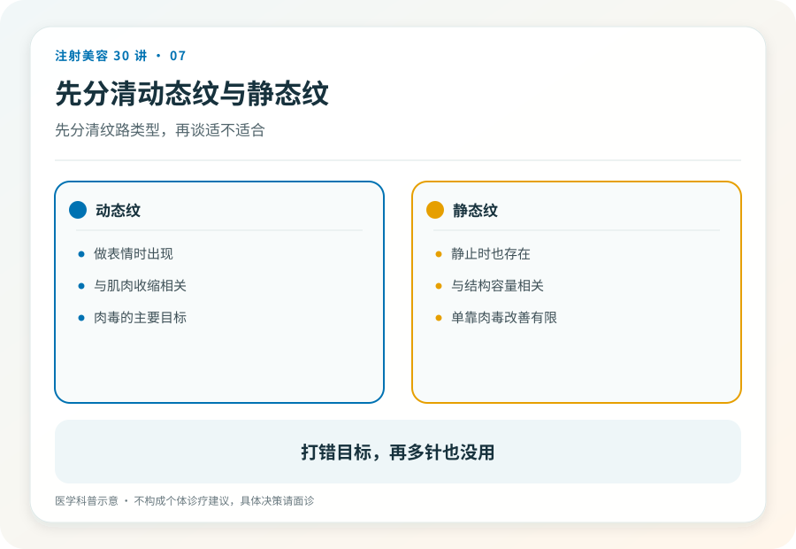
07本文给你一把判断尺，不给项目推荐。个体适应证判断永远属于面诊。
 08
08
本文重排你的恐惧清单。“会恢复”不等于“没关系”，“罕见”不等于“不存在”。
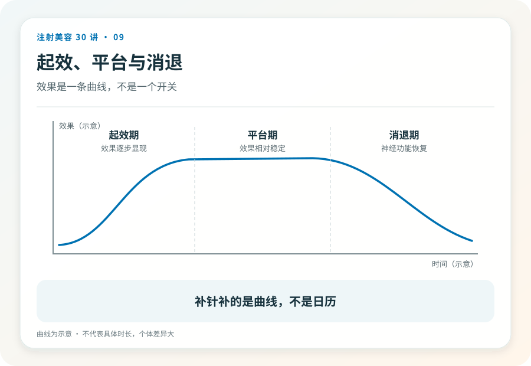
09本文讲时间形态，不给时间表。任何精确到周的承诺都值得怀疑。
 10
10
本文帮你在“该换贵的了”这句话之前，先建立一个鉴别框架。
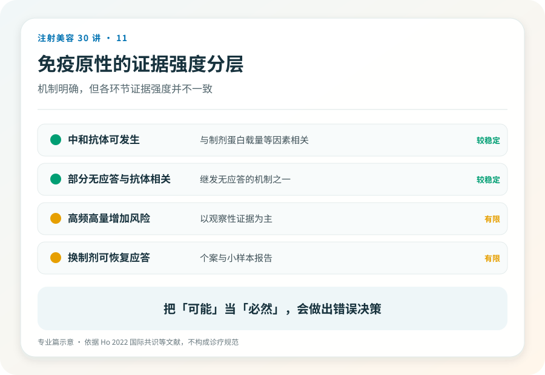
11本篇面向专业读者，提供判断框架与评估流程，不提供剂量方案，不做品牌结论。
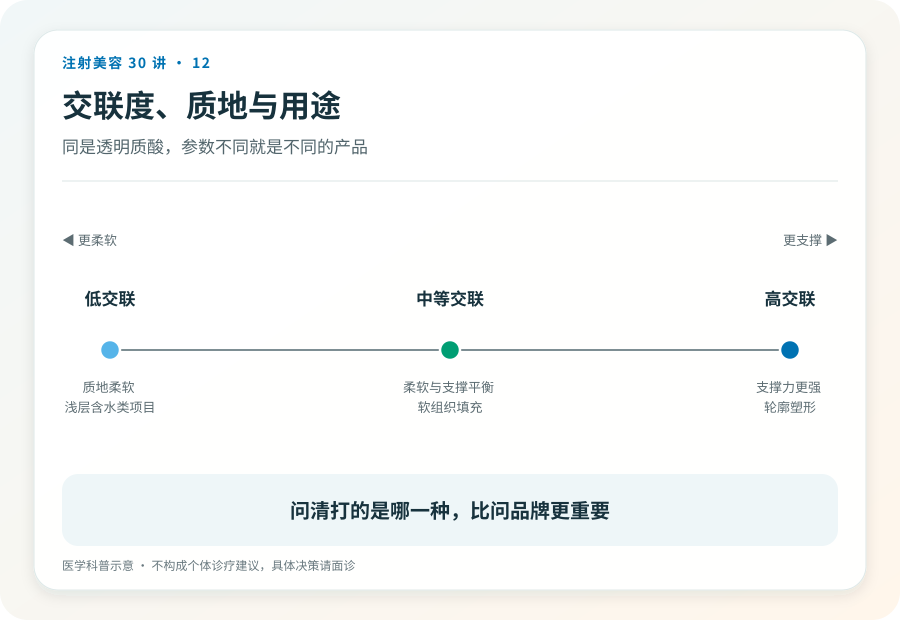
12本文纠正“玻尿酸=保湿成分=温和安全”的推理链，不做产品选购指导。
 13
13
本文帮你识别“有没有诊断”，不教注射技术，也不否定填充本身的价值。
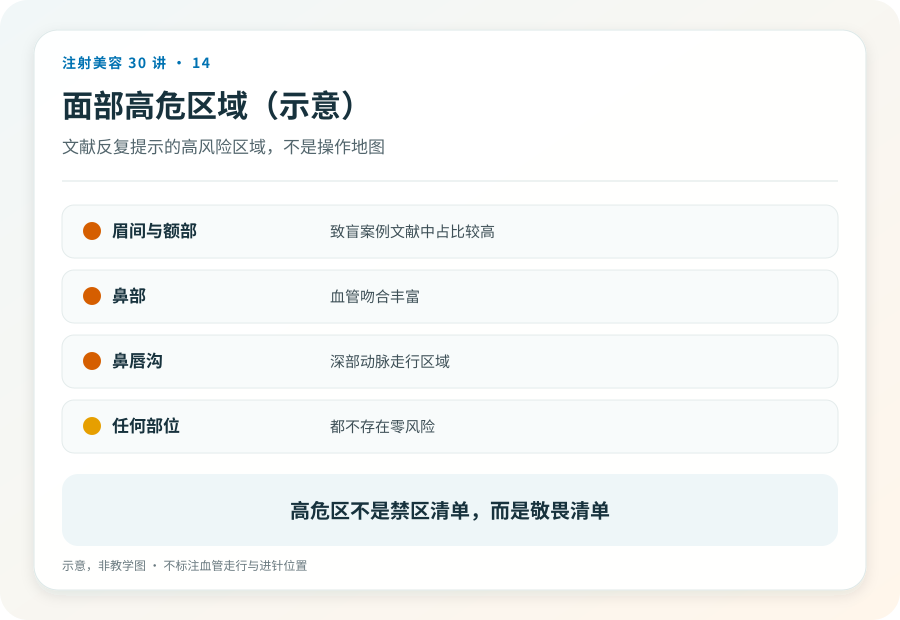
14这是本系列最沉重的一篇。写它不是吓退你，而是这件事常在知情同意里被一句带过。
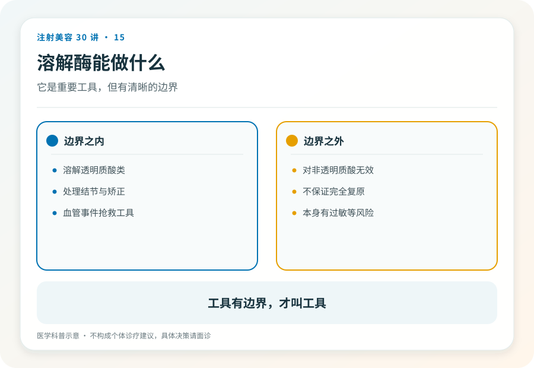
15本文校准“大不了溶掉重来”这句话的真实含义，不提供任何溶解操作的方法。
 16
16
本文翻译“再生”类营销语言，不比较品牌，不否定这类材料的合理使用场景。
 17
17
本文建立“注射史是长期病史”的意识，不提供任何自行处理方法。
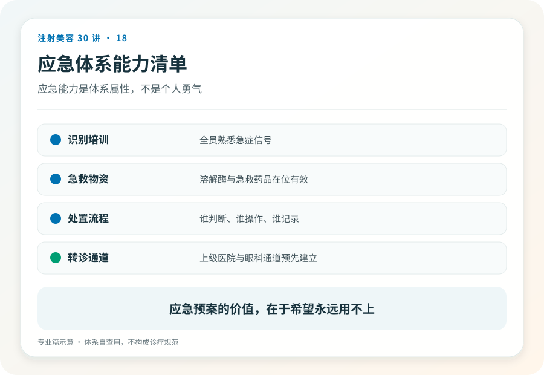
18本篇面向专业读者，讨论应急体系的结构，不提供药物剂量与操作参数。
 19
19
本文拆解“水光”这个名字掩盖的成分问题，不评价任何机构的具体配方。
 20
20
本文写作时中国无获批注射溶脂产品，发布与阅读时请按药监局当前公示复核。
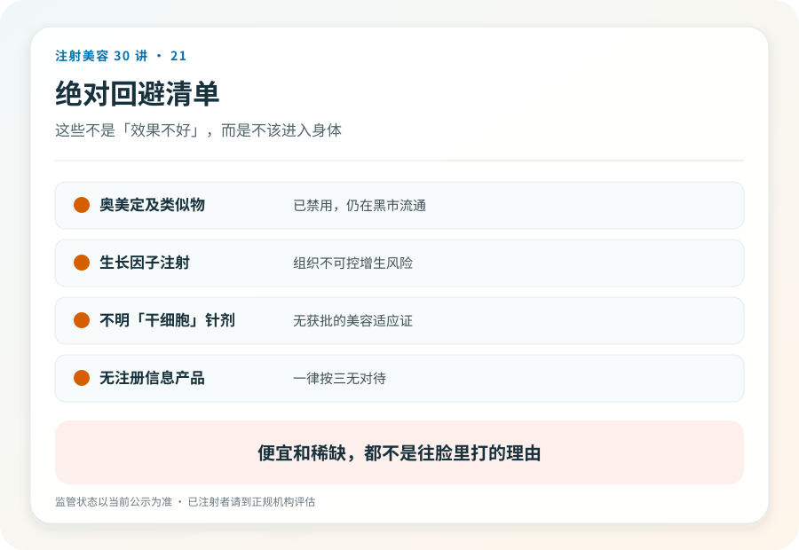
21本系列极少给“绝对”结论，这篇是例外。这些项目的风险结构里没有可管理的部分。
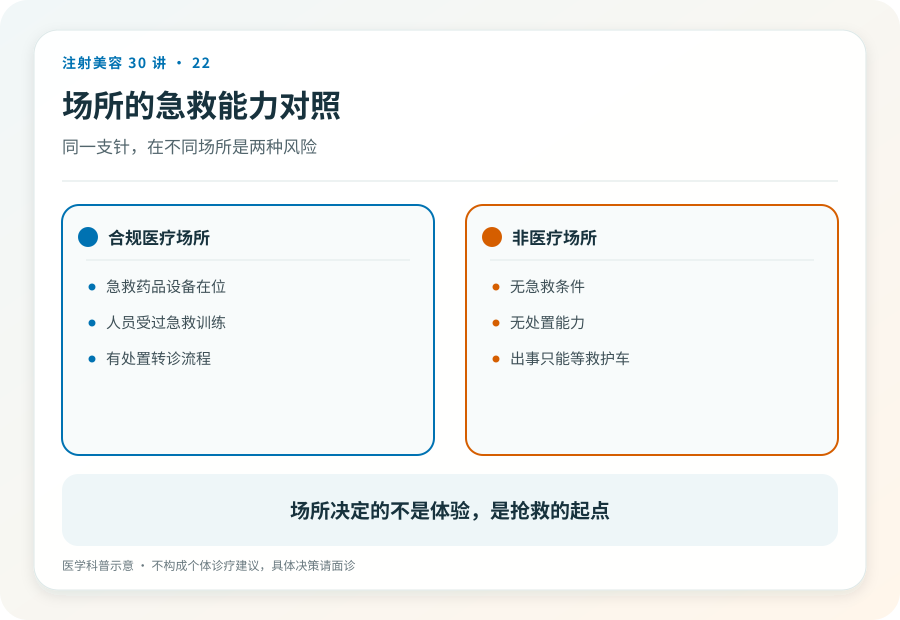
22本文解释为什么“同一个医生换个地方打”不是省钱，而是换了一个风险等级。
本文是全系列核验意识的落地版。当场可执行、不需要专业知识、不怕得罪人。
 24
24
本篇面向专业读者。灰色地带的风险最终由操作者的执业资格和患者的组织承担。
 25
25
本文给你一张问题清单，用法是观察对方“怎么回答”，而不是背题对答案。
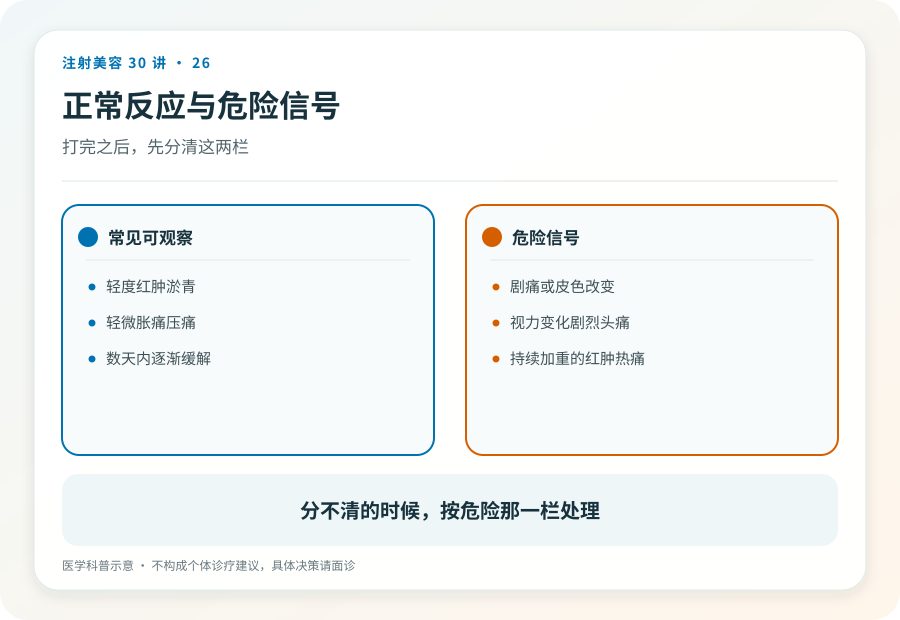
26具体医嘱以实施注射的医疗团队为准。本文帮你建立分层框架和求助路径，不提供居家处理方案。
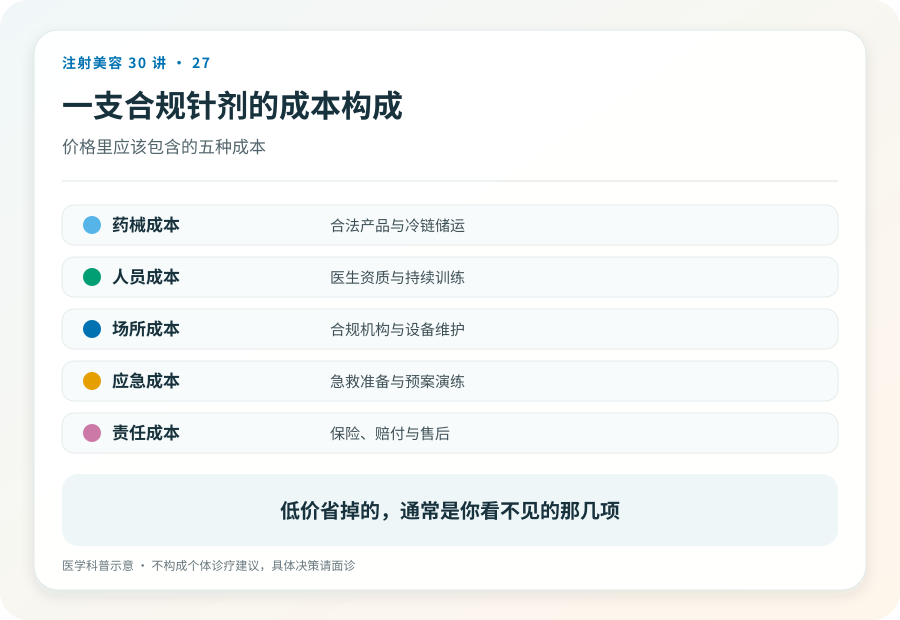
27本文拆解价格结构与维权路径的通则，不评判具体价格，法律个案请咨询专业律师。
 28
28
本篇面向专业读者。BDD 相关内容为临床识别框架，不构成诊断标准，不应被消费者用于自我诊断。
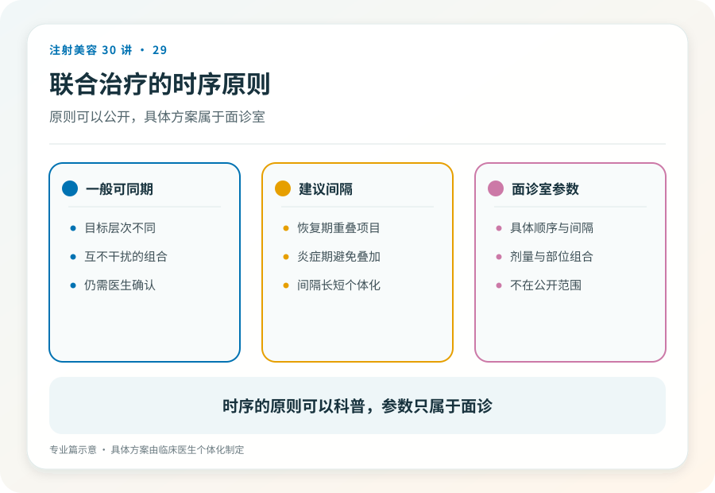
29本篇讨论时序原则，不提供“X 天后可做 Y”式的天数表；证据不足以支撑通用数字。
 30
30
本篇是专业篇，也是消费者可读的收束。四道门是本系列构造的认知工具，不是行业标准术语。
换一个关键词，或清除当前筛选。
VISUAL ATLAS
六张竖版海报浓缩全系列核心工具。点击任意海报可查看原始高清 SVG。
THE FINAL PRINCIPLE
注射美容是择期项目。“不打”不是损失，而是当核验没有通过时，这套系统正常工作的结果。
阅读终章｜四道门与一条链